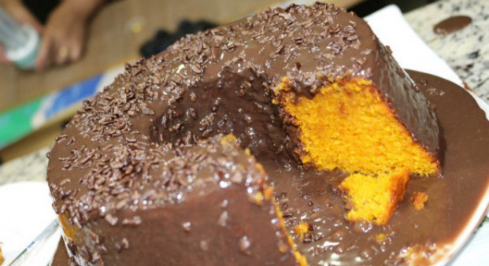

Página inicial - Receitas salgadas
Bolo de fubá

Igredientes
3 ovos inteiros
2 xícaras (chá) de açúcar
2 xícaras (chá) de fubá
3 colheres (sopa) de farinha de trigo
1/2 copo (americano) de óleo
1 copo (americano) de leite
1 colher (sopa) de fermento em pó
Modo de preparo
Em um liquidificador, adicione os ovos, o açúcar, o fubá, a farinha de trigo,
o óleo, o leite e o fermento, depois bata até a massa ficar lisa e homogênea.
Despeje a massa em uma forma untada e polvilhada.
Leve para assar em forno médio 180 °C) preaquecido por 40 minutos.
Outros bolos encontrados aqui:
